Where peaks are relative to genes, profiles and heatmaps, and comparing ChIP-seq between conditions with replicates
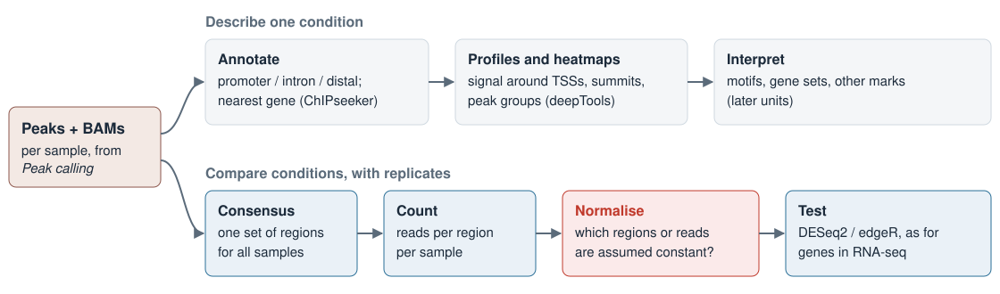
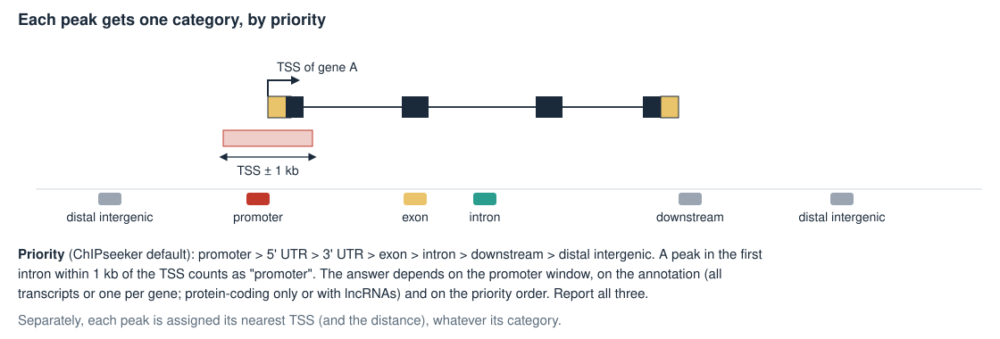
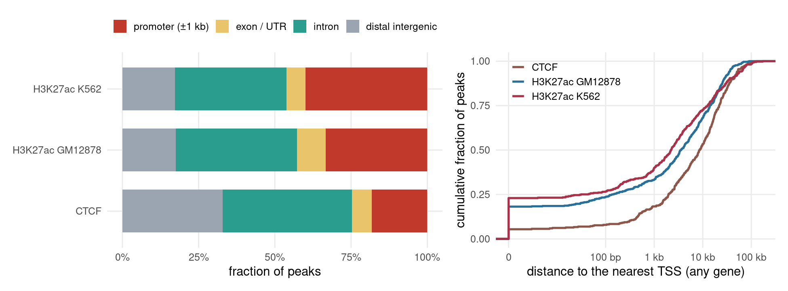
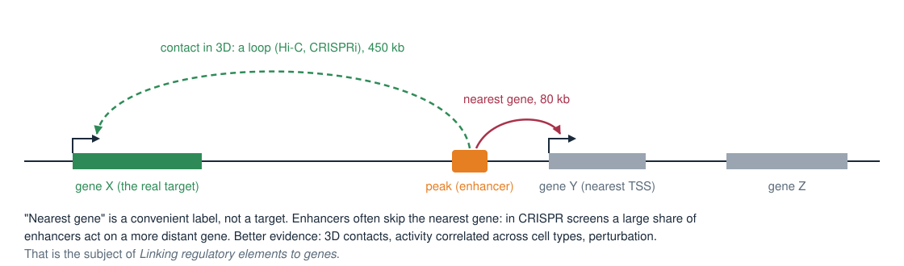
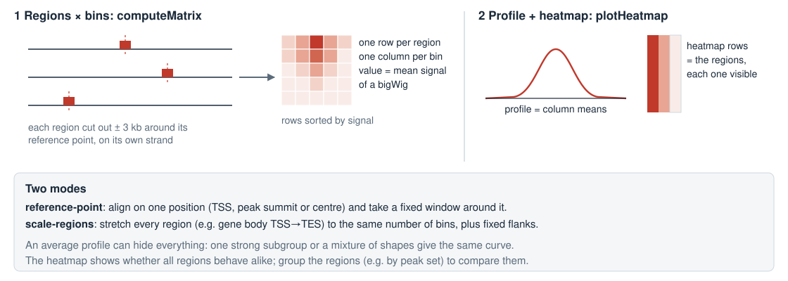
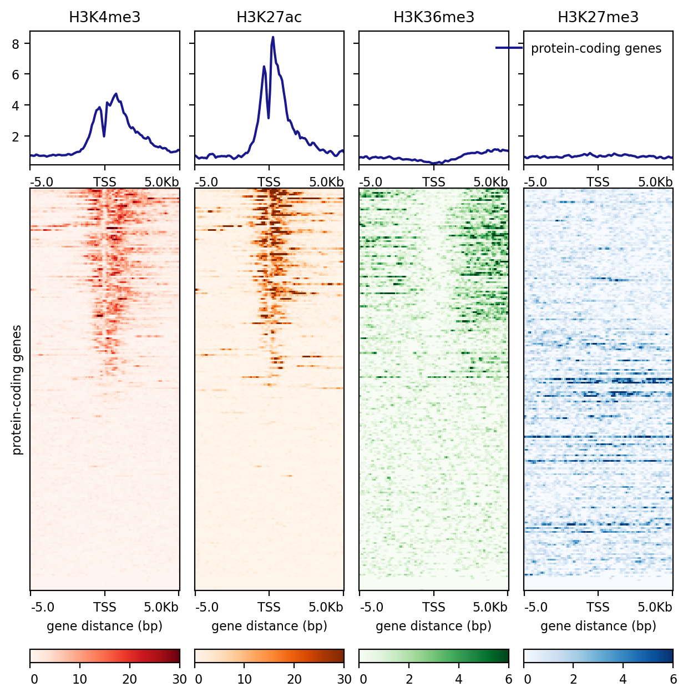
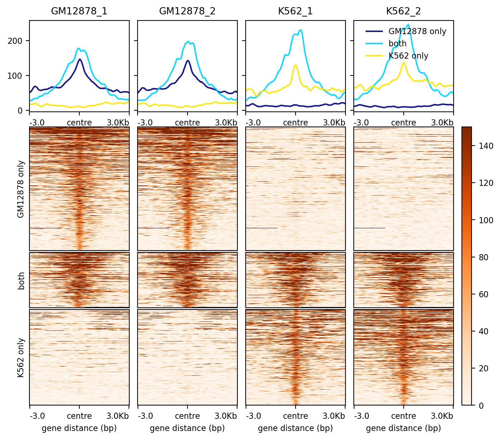
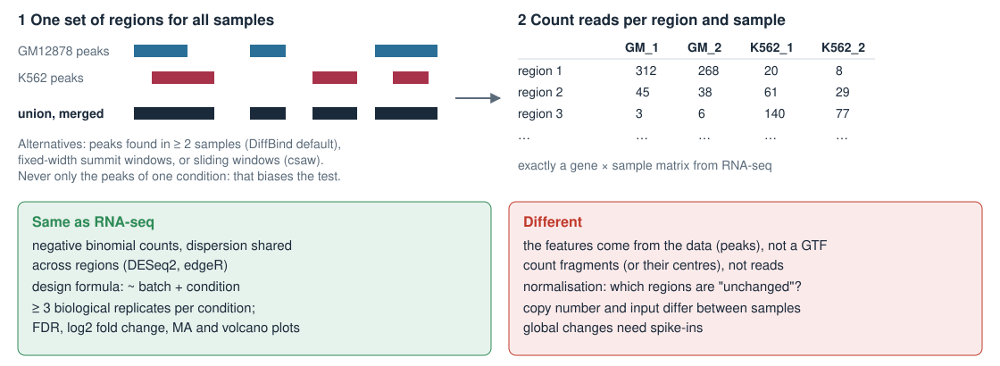
| GM12878 rep 1 | GM12878 rep 2 | K562 rep 1 | K562 rep 2 | GM12878 input | K562 input | |
|---|---|---|---|---|---|---|
| reads on chr21 (filtered) | 77 180 | 63 656 | 137 885 | 64 446 | 67 346 | 237 564 |
| reads in the 841 regions | 42 836 | 34 973 | 54 526 | 28 516 | 2 808 | 11 547 |
| FRiP | 0.555 | 0.549 | 0.395 | 0.442 | 0.042 | 0.049 |
| read length (bp) | 51 | 51 | 36 | 36 | 51 | 36 |
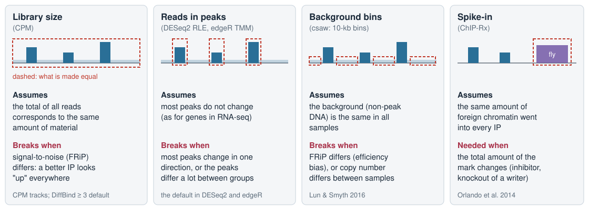
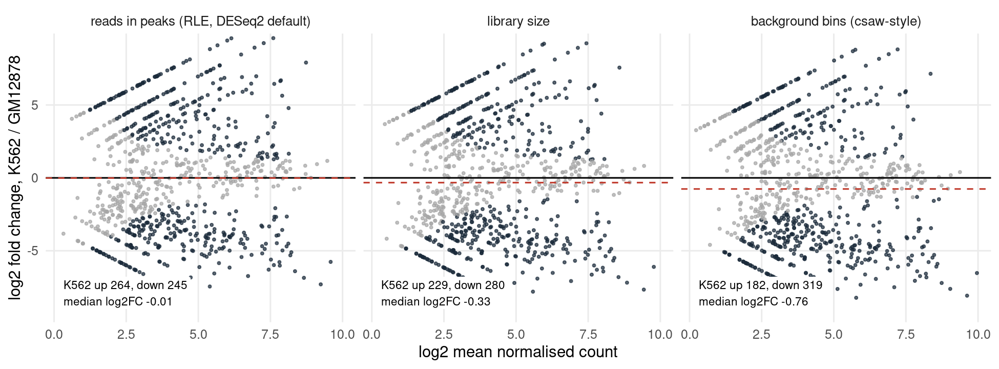
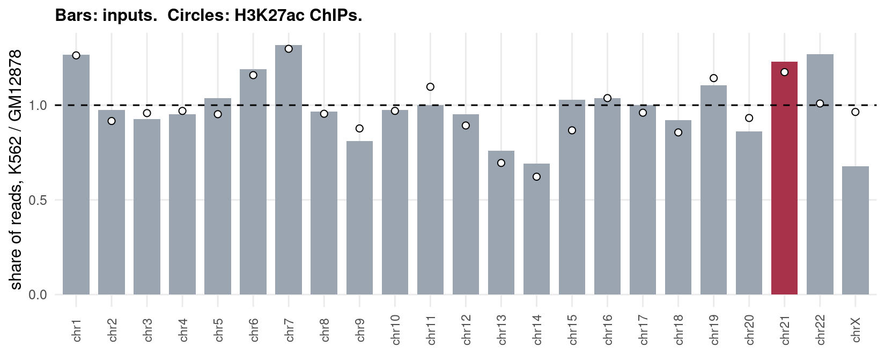
A fixed amount of Drosophila chromatin is added to each sample before the IP. DESeq2 accepts any size factors, so use the fly reads:
| ctrl 1 | ctrl 2 | trt 1 | trt 2 | |
|---|---|---|---|---|
| fly reads (spike-in) | 50 000 | 60 000 | 100 000 | 110 000 |
| size factor s_j = N_{\text{fly},j} / \text{geometric mean} | 0.66 | 0.79 | 1.32 | 1.45 |
| reads in region A | 800 | 960 | 800 | 880 |
| normalised count = reads / s_j | 1 213 | 1 213 | 606 | 606 |
sizeFactors(dds) <- s before DESeq(dds).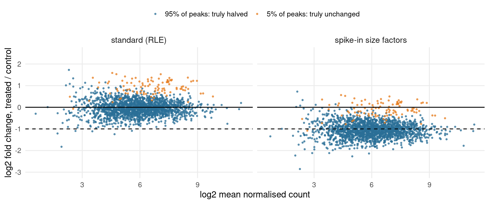
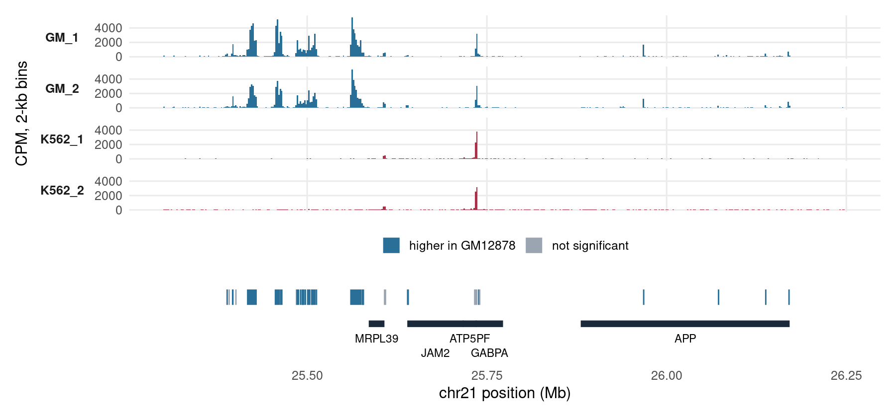
| tool | features | normalisation | test |
|---|---|---|---|
| DESeq2 / edgeR directly | your consensus peaks | median-of-ratios / TMM, or your own size factors | NB GLM |
| DiffBind | consensus of peaks in ≥ n samples | library size (default), RLE/TMM, background, spike-in | DESeq2 or edgeR |
| csaw | sliding windows, merged after testing | background bins or high-abundance windows | edgeR, region-level FDR |
| MAnorm2, ChIPComp | peaks | model-based, between groups | own models |
| broad marks | genes, promoters or large bins | as above | as above |
| pitfall | consequence | instead |
|---|---|---|
| comparing peak numbers or overlaps between conditions | thresholds and depth decide “gained” and “lost” sites | count reads in a common region set and test |
| consensus from one condition’s peaks | bias towards that condition | union of all conditions (or ≥ n samples) |
| n = 1 per condition | no dispersion estimate; any difference “significant” | ≥ 3 biological replicates |
| default normalisation under a global change | real losses hidden, unchanged sites look gained | spike-ins; check with a western blot |
| ignoring copy number | amplified regions look gained | inputs from the same cells; greylists; compare within copy-number states |
| technical variables confounded with condition | batch or read length becomes “biology” | balance batches; include them in the design |
| nearest gene = target gene | wrong genes in enrichment analyses | contacts, expression correlation, perturbation |
| step | key fact |
|---|---|
| annotation | category by priority (promoter window!), nearest TSS; descriptive, not functional |
| nearest gene | a label; distal elements often regulate other genes |
| profiles, heatmaps | computeMatrix (reference-point, scale-regions) → plotHeatmap; look at the rows, not just the mean |
| consensus | union of peaks from all conditions (or ≥ n samples), blacklist removed |
| counts → test | DESeq2/edgeR exactly as RNA-seq; ≥ 3 replicates; batch in the design |
| normalisation | library size, reads in peaks, background bins, spike-in: each assumes a different constant |
| copy number | inputs reveal it; corrects or confounds differential binding |
| global changes | only spike-ins (or orthogonal data) can show them |
Not required reading and not examined. For those who want the primary literature.